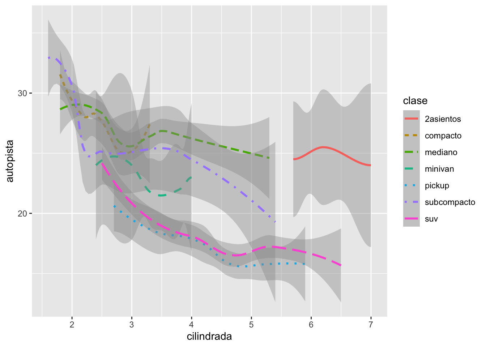

Capítulo3 Visualización de datos
Fecha de la ultima revisión
## [1] "2024-10-03"El tema proviene de los siguientes sitios.
English: https://r4ds.had.co.nz/data-visualisation.html
Español: https://es.r4ds.hadley.nz/03-visualize.html
3.1 Temas:
- Introducción
- paquete “tidyverse”
- datos de “mgp”
- ggplot2
- El concepto de la gramática de gráficos
3.1.2 Facet_wrap
ggplot(data = Anolis) +
geom_point(mapping = aes(x = SVL, y = TAIL, color=SEX_AGE))+
facet_wrap(~SEX_AGE, ncol=1)
3.1.3 Regresión lineal

# derecha LOESS
ggplot(data = millas) +
geom_smooth(method=lm,mapping = aes(x = cilindrada, y = autopista))+ # y = mx+b
geom_point( mapping = aes(x = cilindrada, y = autopista))
3.1.4 Regresión Loess
Vea este enlace para información sobre la regresión LOESS
<https://en.wikipedia.org/wiki/Local_regression>
## [1] "fabricante" "modelo" "cilindrada" "anio" "cilindros"
## [6] "transmision" "traccion" "ciudad" "autopista" "combustible"
## [11] "clase"ggplot(data = millas) +
geom_smooth(mapping = aes(x = cilindrada, y = autopista, linetype = clase, colour=clase))
3.1.5 Regresión LOESS de un grupo
ggplot(data = millas, mapping = aes(x = cilindrada, y = autopista)) +
geom_point(mapping = aes(color = clase)) +
geom_smooth(data = filter(millas, clase == "suv"), se =TRUE)
3.1.6 Regresión LOESS: dos alternativas

ggplot() +
geom_point(data = millas, mapping = aes(x = cilindrada, y = autopista)) +
geom_smooth(data = millas, mapping = aes(x = cilindrada, y = autopista))
3.1.7 Regresión Lineal \[y=b+mx\]
ggplot(data = millas, mapping = aes(x = cilindrada, y = autopista)) +
geom_point(mapping = aes(color = clase)) +
geom_smooth(method=lm)

3.1.9 Puntos con intervalo mínimo y máximo
ggplot(data = diamantes) +
stat_summary(
mapping = aes(x = corte, y = profundidad),
fun.min = min,
fun.max = max,
fun = median
)


3.2 Leer datos de un archivo
- Ejercicios:
Hacer los ejercicios en la sección 3.2.4 del libro en español
- Aestética
- Ejercicios:
Hacer los ejercicios en la sección 3.3.1 del libro en español
- Problemas comunes
- Separar en facetas
- Ejercicios:
Hacer los ejercicios en la sección 3.5.1 del libro en español
- Objetos geométricos ***
- Ejercicios:
Hacer los ejercicios en la sección 3.6.1 del libro en español
- Transformación estadísticas
- Ejercicios:
Hacer los ejercicios en la sección 3.7.1 del libro en español
- Ajuste de posición
- Ejercicios:
Hacer los ejercicios en la sección 3.8.1 del libro en español
- Sistema de coordenadas
- Ejercicios:
Hacer los ejercicios en la sección 3.9.1 del libro en español
Ejercicio para entregar ( 6 puntos)
- Activa el paquete “ggversa”
- Activa el paquete “tidyverse”
- Utiliza los datos “PartosInfantes”. Leen la información sobre el archivo Son tres graficas que tendrán que someter
- Hacer un gráfico de puntos entre el número de muertes de infante y la cantidad de madres que mueren en el parto. (1 punto)
- Añadir al gráfico anterior un modelo lineal (linear model). Y Demostrando todos los datos con un color por region geografica, o sea añadir un color a los puntos por Grupo “region geográfica”. AM=America, EU= Union Europea, AF= Africa, O=Oceania, AS=Asia, Medio Oriente, (2 puntos)
- Enseña el modelo de regresion lineal solamente para AFRICA y ASIA (en la misma gráfica) (3 puntos)
Someter las tres gráficas en formato .jpeg o .png en el portal.
## NMI NMP GSPC Grupo Pais
## 1 8723 400 605.1878 AM Argentina
## 2 60 5 1720.1595 AM Bahamas
## 3 42 1 1146.0417 AM Barbados
## 4 121 2 278.5792 AM Belize
## 5 7756 540 208.7842 AM Bolivia
## 6 45682 1400 947.4277 AM BrazilHacer un grafico de puntos entre el numero de muertes por infante y la cantidad la cantidad de madres que mueren en el parto
Añadir al grafico anterior un modelo lineal (linear model)
Añadir un color a los puntos por grupo “region”. AM=America, EU= Union Europea, AF= Africa, O=Oceania, AS=Asia, Medio Oriente,
Demostrando todos los datos con un color por region geografica, enseña el modelo de regresion lineal solamente para AFRICA
3.3 Vea el siguiente gráfico
ggplot(data = millas) +
geom_point(mapping = aes(x = cilindrada, y = autopista)) +
facet_grid(traccion ~ cilindros)
¿Por qué hay facetas que son vacias?
Explica que hace “.”? en estas funciones
ggplot(data = millas) +
geom_point(mapping = aes(x = cilindrada, y = autopista)) +
facet_grid(traccion ~ .)
ggplot(data = millas) +
geom_point(mapping = aes(x = cilindrada, y = autopista)) +
facet_grid(. ~ cilindros)
- Qué hace nrow en este código
ggplot(data = millas) +
geom_point(mapping = aes(x = cilindrada, y = autopista)) +
facet_wrap(~ clase, nrow = 2)